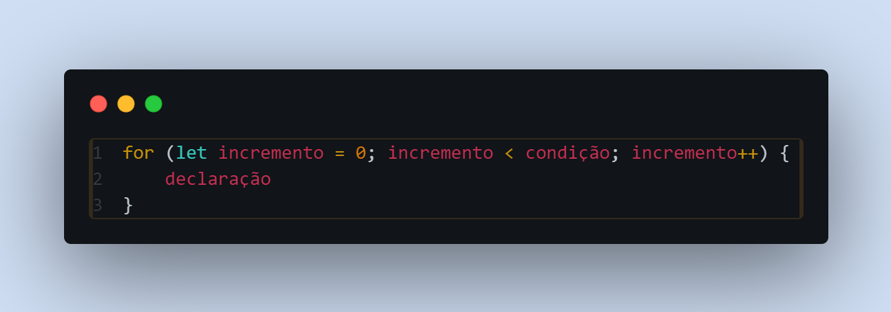
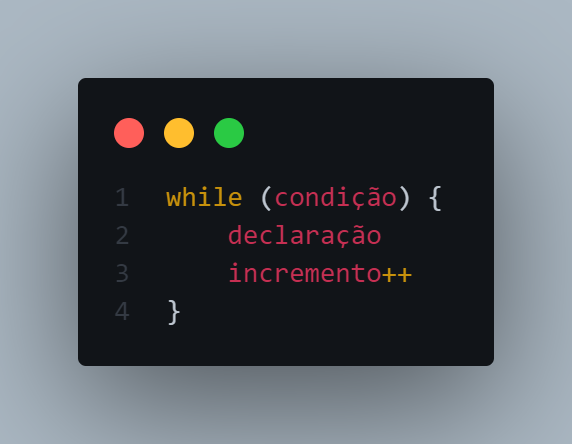
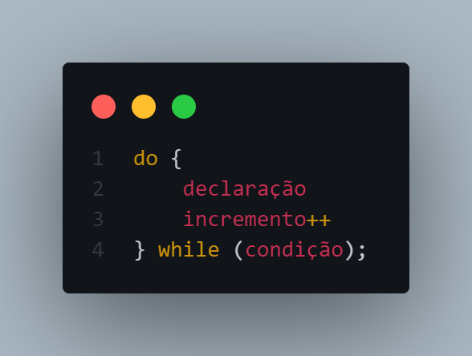

Uma estrutura de repetição é a parte do código que organiza e define como um laço de repetição deve
funcionar. É como uma ferramenta que permite programar as repetições de forma lógica e controlada.
Ela estabelece regras para o início, a execução e o fim da repetição. Dentro dessa estrutura, você
decide o que será repetido, quantas vezes ou em quais condições a repetição acontece.
for: Um laço for é repetido até que a condição especificada seja falsa, o for se diferencia pela sua sintaxe onde a variavel de incremento o incremento e condição são declarados dentro da sua propria estrutura nos parenteses. Uma declaração for é feita da seguinte maneira
while: Uma declaração while executa suas instruções, desde que uma condição especificada seja avaliada como verdadeira, o while se diferencia pela sua sintaxe onde a variavel de incremento é declarada fora da estrutura while, a condição é declarada dentro dos parenteses e o incremento é declarado no bloco de repetição da estrutura, o while tambem pode ter condições mais elaboradas e complexas oque o tambem diferencia do for que tem uma condição "simples". Uma declaração while é feita da seguinte maneira
do...while: A instrução do...while repetirá até que a condição especificada seja falsa, a instrução do...while e executada pelo menos uma vez, o do...while se diferencia do while convencional pois executa o bloco de repetição primeiro e depois analise a condição. Uma declaração do...while é feita da seguinte maneira
